Gestionnaire de messages dans une file d'attente
Le modèle Gestionnaire de messages dans une file d'attente (GMF) permet d'implémenter facilement de multiples sections de code qui s'exécutent en parallèle et s'envoient des données les unes aux autres. Chaque section de code représente une tâche (l'acquisition de données, par exemple) et est conçue comme une machine à états. Grâce à cette conception, vous pouvez répartir chaque tâche dans différents états.
Le modèle GMF est une version du modèle de conception Producteur/Consommateur, dans lequel l'interface utilisateur (productrice) produit des messages, et les tâches (consommatrices) les consomment. Cependant, dans le modèle GMF, vous pouvez aussi produire des messages à partir d'une boucle consommatrice.
Ce modèle comporte une boucle productrice et une boucle consommatrice. Vous pouvez ajouter des boucles consommatrices en fonction de vos besoins.
Configuration système requise
Système de base, complet ou professionnel de LabVIEW
Cas d'usage
Le modèle GMF est utile pour les applications dans lesquelles plusieurs tâches s'effectuent en parallèle, souvent à des états différents. Considérons par exemple une application qui acquiert, enregistre et affiche en continu deux signaux : un signal RS-232 et un signal analogique. Ces signaux se produisent à des fréquences différentes ; l'application doit donc avoir deux boucles qui s'exécutent en parallèle. De plus, chaque boucle est divisée en plusieurs états comme suit :
- Initialiser le matériel d'acquisition des données
- Acquérir les données
- Enregistrer les données acquises sur disque
- Afficher les données acquises dans un graphe déroulant
- Définir le matériel à un état sans échec
- Arrêter l'acquisition des données et arrêter le matériel.
L'application requiert une interface utilisateur réactive ; autrement dit, les utilisateurs doivent pouvoir cliquer sur les boutons, même si l'application est en train d'exécuter une autre commande. Par conséquent, l'application requiert une troisième boucle parallèle qui surveille en continu si des événements (les commandes suivantes, par exemple) ont lieu sur la face-avant :
- Démarrer l'acquisition des données RS-232
- Arrêter l'acquisition des données RS-232
- Activer l'enregistrement des données RS-232
- Désactiver l'enregistrement des données RS-232
- Démarrer l'acquisition des données analogiques
- Arrêter l'acquisition des données analogiques
- Activer l'enregistrement des données analogiques
- Désactiver l'enregistrement des données analogiques
Le modèle GMF fournit un point de départ pour l'écriture de ce type d'application.
Présentation
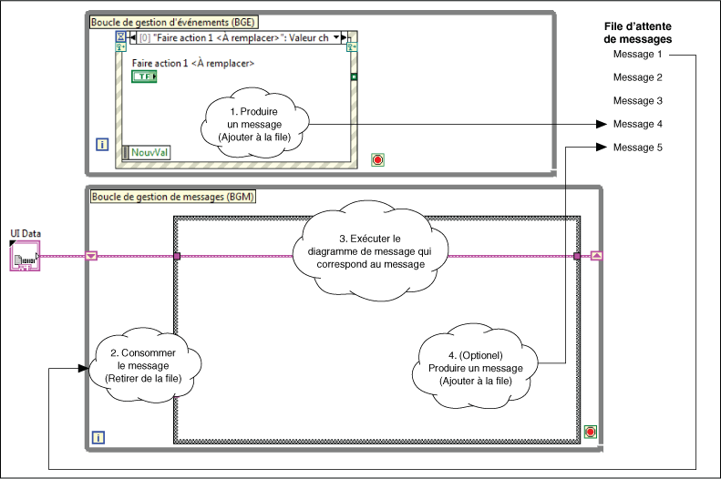Ce modèle exécute de manière répétée les étapes suivantes :
- Un utilisateur agit sur la face-avant, ce qui déclenche la production d'un message par la structure Événement de la boucle de gestion d'événements (BGE). LabVIEW stocke le message dans une file d'attente.
- La boucle de gestion de messages (BGM) lit un message de la file d'attente de messages, ce qui le retire de la file.
- Le message est une chaîne qui correspond à un des sous-diagrammes de la structure Condition de la BGM. Par conséquent, la lecture du message provoque l'exécution du sous-diagramme correspondant de la structure Condition. Ce sous-diagramme est appelé diagramme de message car il correspond à un message.
- Si vous le voulez, le diagramme de message peut produire un autre message et le stocker dans la file d'attente de messages.
Remarques :
- La BGE est la boucle productrice. La BGM est la boucle consommatrice. Ces boucles s'exécutent en parallèle et sont connectées par la file d'attente de messages, qui facilite la communication entre les boucles.
- La file d'attente de messages est une file d'attente LabVIEW qui stocke les messages à consommer. Comme la BGE envoie les messages à cette file d'attente plutôt que de les envoyer directement à la BGM, elle peut produire des messages même quand la BGM n'est pas en train d'en consommer. Chaque file d'attente de messages appartient à une BGM particulière.
- Chaque itération de la BGM lit le plus ancien message de la file d'attente de messages puis exécute le diagramme de message correspondant. Bien que la BGM soit principalement une consommatrice de messages, elle peut aussi en produire.
- Chaque boucle gère les erreurs en utilisant un sous-VI gestionnaire d'erreur spécifique à la boucle. Si le GMF détecte une erreur dans la BGE, LabVIEW affiche un message d'erreur sans arrêter le GMF. Si le GMF détecte une erreur dans la BGM, LabVIEW affiche un message d'erreur et arrête le GMF.
- Votre application peut avoir plusieurs BGM. Chaque BGM correspond à une tâche effectuée par l'application (l'acquisition ou l'enregistrement des données, par exemple).
- Remarquez le cluster UI Data sur le diagramme précédent. Ce cluster contient des données qui sont accessibles et modifiables par tous les diagrammes de messages d'une BGM. Dans ce modèle, le cluster est défini comme définition de type, UI Data.ctl. Chaque définition de type appartient à une seule BGM.
Exécution de ce modèle
- Dans la fenêtre de l'Explorateur de projet, ouvrez et exécutez le VI Main.vi.
- Cliquez sur les commandes de la face-avant et observez les messages qui s'affichent dans l'indicateur Affichage.
Modification de ce modèle
Détermination de vos besoins
Le tableau suivant résume les décisions de conception que vous devez prendre avant de modifier ce modèle :
| Décision de conception |
Exemple |
Informations détaillées |
| Vous devez déterminer combien de BGM ajouter. Chaque BGM définit une tâche qui s'exécute parallèlement aux autres tâches. |
Vous avez une application qui acquiert des données et les enregistre sur disque en parallèle.
Cette application comporte deux tâches : l'acquisition des données et l'enregistrement de ces données dans un fichier journal. Par conséquent, vous avez besoin de deux boucles de gestion de messages. |
Création d'une boucle de gestion de messages |
Pour chaque BGM, vous devez déterminer quels diagrammes de messages ajouter.
Un diagramme de message est un sous-diagramme de la structure Condition d'une BGM. Chaque sous-diagramme correspond à un état dans lequel la tâche peut se trouver ; par conséquent, pour déterminer les sous-diagrammes à ajouter, divisez chaque tâche en différents états. |
Vous voulez diviser la tâche d'acquisition de données en trois états : Initialiser, Acquérir les données, et Quitter. Par conséquent, créez ces diagrammes de messages dans la BGM qui acquiert les données.
Vous voulez diviser la tâche d'enregistrement des données en trois états : Initialiser, Enregistrer les données et Quitter. Par conséquent, créez ces diagrammes de messages dans la BGM qui enregistre les données. |
Création d'un diagramme de message |
| Vous devez déterminer de quelles données les diagrammes de messages d'une BGM ont besoin. |
Chaque diagramme de message de la BGM d'acquisition de données accède à une référence matérielle. Le diagramme de message Initialiser doit ouvrir cette référence, le diagramme Acquérir les données utilise cette référence pour acquérir les données, et le diagramme de message Quitter ferme la référence. |
Définition des données dont une boucle de gestion de messages a besoin |
| Vous devez déterminer quand chaque diagramme de message doit s'exécuter. Un diagramme de message s'exécute lorsque sa BGM reçoit le message approprié. Par conséquent, vous devez déterminer quand il faut envoyer chaque message à la BGM. Vous pouvez envoyer un message à partir d'une commande de la face-avant ou d'un diagramme de message. |
Vous voulez ajouter un bouton qui envoie le message Initialiser à la BGM d'acquisition de données.
Ensuite, vous voulez que le diagramme de message Initialiser envoie le message Acquérir les données à la même BGM. |
Ajout d'une commande qui envoie un message à une boucle de gestion de messages ou Envoi d'un message à une boucle de gestion de messages, selon que vous voulez ou non que le message soit envoyé par une commande. |
| Vous devez déterminer si le message Quitter doit arrêter toutes les BGM. Le VI Dequeue Message.vi utilise ce message car il peut arrêter une BGM. |
Vous voulez que chaque BGM s'arrête lorsqu'elle reçoit le message Arrêter plutôt que le message Quitter. |
Changement du message qui arrête une boucle de gestion de messages |
| Vous devez déterminer si vous voulez ignorer des erreurs spécifiques dans la BGE ou la BGM. |
Vous voulez ignorer les erreurs de timeout du réseau lors de la lecture des messages de la file d'attente de messages. |
Ignorer les erreurs dans la boucle de gestion d'événements et la boucle de gestion de messages |
Création d'une boucle de gestion de messages
Une boucle de gestion de messages (BGM) représente une tâche que l'application peut effectuer (l'acquisition ou l'enregistrement des données, par exemple) en parallèle à d'autres tâches. Chaque BGM peut être divisée en sous-tâches qui correspondent aux états. Les BGM comportent les éléments suivants :
- Une file d'attente de messages
- Une boucle While qui lit les messages de la file d'attente de messages.
- Une structure Condition qui contient un sous-diagramme, appelé aussi diagramme de message, pour chaque message susceptible d'être lu, chaque message correspondant à un état de la tâche.
- (Facultatif) Les données auxquelles chaque diagramme de message de la BGM a accès
Effectuez les étapes suivantes pour créer une BGM :
- Ce modèle comporte une définition de type qui définit le cluster qui contient les refnums pour toutes les files d'attente de messages. Par défaut, cette définition de type n'accepte qu'une file d'attente. Effectuez les étapes suivantes pour ajouter une autre file d'attente à cette définition de type.
- Dans la fenêtre de l'Explorateur de projet, ouvrez le VI Message Queue.lvlib:Create All Message Queues.vi.
- Cliquez sur la constante Files d'attente de messages avec le bouton droit et ouvrez la définition de type :
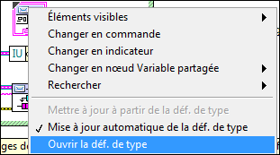
LabVIEW lance la fenêtre de l'Éditeur de commande.
- Élargissez le cadre du cluster Files d'attente de messages.
- Copiez le refnum de file d'attente IU dans le cluster.
- Nommez le nouveau refnum de file d'attente. Par exemple :
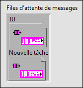
- Sélectionnez Fichier»Appliquer les modifications et fermez la fenêtre de l'Éditeur de commande. La définition de type Files d'attente de messages contient désormais une file d'attente de messages supplémentaire.
- Modifiez le VI Create All Message Queues.vi pour qu'il exécute les étapes suivantes :
- Obtenir la référence à la file d'attente de messages
- Assembler cette file d'attente dans le cluster Files d'attente de messages
- (Facultatif) Envoyer un message initial à la nouvelle BGM.
La capture d'écran suivante montre un exemple de code qui accomplit les étapes précédentes :
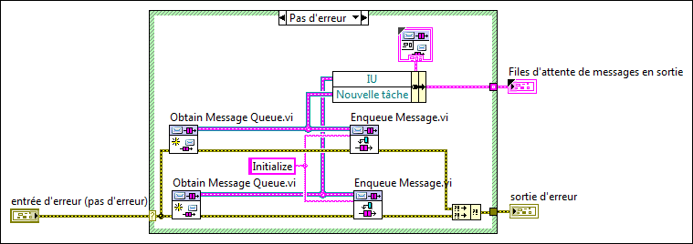
- (Facultatif) Si la BGM doit accéder aux données, créez une définition de type qui représente ces données.
- Dans le VI Main.vi, créez la boucle de gestion de messages qui représente la tâche :
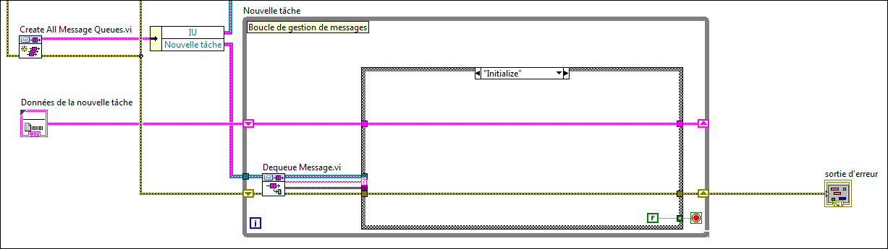
Remarques :
- Rappelez vous qu'à l'étape 2, vous avez assemblé le refnum de file d'attente Nouvelle tâche dans le cluster Files d'attente de messages en sortie. Le code ci-dessus montre où ce cluster est désassemblé et comment la branche du fil de liaison de la file d'attente Nouvelle tâche est connectée à la BGM Nouvelle tâche.
- Rappelez-vous qu'à l'étape 2, vous avez l'option d'envoyer un message initial à la file d'attente de messages. Le code de l'étape 2 montre le message Iniitialize initial. Le code ci-dessus montre le diagramme de message (Initialize) qui s'exécute lorsque ce message est reçu.
- Rappelez-vous qu'à l'étape 4, vous aviez l'option de créer une définition de type. Le code ci-dessus montre comment câbler cette définition de type, Données de la nouvelle tâche pour que la BGM puisse l'utiliser.
- Si vous voulez que la nouvelle tâche envoie des messages à la file d'attente IU, connectez le fil de liaison du refnum de file d'attente d'IU à la boucle Nouvelle tâche.
- Le code ci-dessus montre la constante FAUX câblée au terminal de condition de la boucle While. Dans chaque BGM, un seul diagramme de message devrait être en mesure d'arrêter la BGM. Cette conception évite les arrêts partiels et accidentels en assurant que :
- Le code de fermeture ne s'exécute que juste avant la fermeture de la BGM.
- Le code d'arrêt s'exécute toujours jusqu'à la fin.
- Pour que le diagramme du VI Main.vi reste compact et lisible, vous pouvez encapsuler chaque BGM dans un sous-VI. Pour organiser davantage le projet, vous pouvez mettre chaque sous-VI, ses VIs de support et sa définition de type dans une bibliothèque de projet. Reportez-vous à l'exemple de projet Mesure continue et enregistrement dans un fichier, disponible à partir de la boîte de dialogue Créer un projet pour voir un exemple basé sur cette conception.
- La BGM illustrée ci-dessus n'a pas besoin d'avoir accès aux données du fil de liaison Évènement Stop. La BGM du modèle utilise ce fil de liaison pour exécuter le VI Fire User Event - Stop.vi, qui ferme la boucle de gestion d'événements. Aucune autre BGM n'a besoin d'effectuer cette action.
- Ajoutez des diagrammes de messages à la structure Condition de la BGM. Pour minimiser les erreurs et le comportement inattendu, chaque BGM doit avoir les diagrammes de messages suivants :
- Un diagramme de message qui initialise la tâche ; ce diagramme pourrait, par exemple, établir une connexion à un périphérique matériel, ouvrir des fichiers pour y enregistrer des données, etc.
- Un diagramme de message qui gère les messages non reconnus.
- Un diagramme de message qui libère la file d'attente de messages et arrête la tâche lorsqu'il s'exécute. Par exemple :
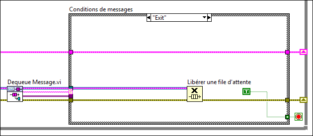
Par défaut, le message qui déclenche l'exécution de ce diagramme de message est Exit, mais vous pouvez le changer.
- (Facultatif) Si l'application requiert que la BGM arrête d'effectuer sa tâche mais qu'elle reste active (pour pouvoir redémarrer la tâche si besoin est), créez un diagramme de message qui utilise la fonction Vider une file d'attente afin de retirer les messages en attente.
Par exemple, dans une application de mesure continue, vous pouvez avoir les boutons Lancer la mesure et Arrêter la mesure. Un clic sur Lancer la mesure initialise la BGM, qui continue de s'exécuter en s'envoyant continuellement le même message. Dans cette application, un clic sur Arrêter la mesure arrêterait la mesure et viderait la file d'attente de messages sans arrêter la BGM. Si vous ne videz pas la file d'attente de messages, un clic sur Arrêter la mesure n'aura aucun effet. La file d'attente de messages contient d'autres messages indiquant qu'il faut continuer la mesure, et chacun de ces messages déclenche la génération d'un autre message du même type.
- Ajoutez du code à la BGE pour indiquer à la nouvelle BGM qu'elle doit s'arrêter en cas d'erreur ou si l'application s'arrête ; autrement dit, qu'elle doit exécuter le diagramme de message que vous avez créé à l'étape 5c. Ajoutez ce code à la structure Événement et à la condition Erreur de la figure suivante :
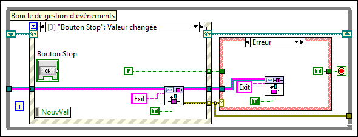
- Envoyez des messages à la BGM.
Création d'un diagramme de message
Un diagramme de message est un sous-diagramme d'une structure Condition, située dans une boucle de gestion de messages, qui exécute un message particulier. C'est semblable à un état d'une machine à états.
Un diagramme de message est un sous-diagramme d'une structure Condition étiqueté avec une chaîne. Il s'exécute lorsque la BGM reçoit un message qui correspond à cette étiquette.
Effectuez les étapes suivantes pour créer un diagramme de message :
- Dans la BGM qui représente la tâche, ajoutez un sous-diagramme à la structure Condition.
 | Astuce Si vous ajoutez un diagramme de message à la BGM incluse dans ce modèle, vous pouvez automatiquement inclure les fils de liaison de données et d'erreur dans le nouveau diagramme de message en copiant la condition ---Copy This Frame---. |
- Dans l'étiquette du sélecteur de condition, entrez le texte du message qui déclenchera l'exécution de ce sous-diagramme. Par exemple, le diagramme de message suivant s'exécute lorsque LabVIEW lit le nouveau message de la file d'attente de messages :
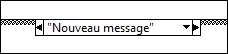
- Ajoutez le code qui s'exécute lorsque ce message est reçu. Prenez soin de respecter les règles suivantes :
- Pour accéder aux données de la tâche et les modifier, utilisez les fonctions Désassembler par nom et Assembler par nom :
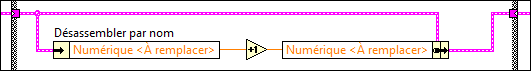
- Afin de faire le suivi de toutes les erreurs, utilisez la fonction Fusionner les erreurs pour fusionner les erreurs provenant de tous les nœuds du sous-diagramme.
- Pour accéder aux données de message, câblez le tunnel de l'entrée Données de message à une fonction Variant en donnée :
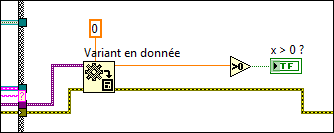
- Pour envoyer un message à une file d'attente de messages, utilisez le VI Enqueue Message.vi.
- Pour exécuter le diagramme de message, envoyez un message à la BGM. Le message envoyé doit correspondre à l'étiquette du diagramme de message que vous avez entrée à l'étape 2.
Définition des données dont une boucle de gestion de messages a besoin
Dans le modèle, UI Data.ctl est la définition de type qui définit le cluster de données auquel la BGM a accès :
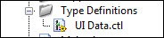Modifiez cette définition de type pour répondre aux besoins de votre application. Par exemple, si plusieurs diagrammes de message d'une BGM ont besoin de modifier la même commande booléenne, ajoutez une commande booléenne à cette définition de type.
Si vous avez plusieurs BGM, créez une définition de type pour chacune. Cette conception évite les erreurs en assurant qu'une BGM ne peut pas accéder aux données d'une autre.
Ajout d'une commande qui envoie un message à une boucle de gestion de messages
- Ajoutez une commande à la fenêtre de la face-avant.
- (Facultatif) Si vous voulez qu'un diagramme de message modifie cette commande par programmation, assemblez le refnum de la commande dans la définition de type de cette BGM.
- Ajoutez une condition d'événement à la structure Événement dans la boucle de gestion d'événements.
- Configurez l'événement à déclencher lorsque la valeur de ce nouveau bouton change :
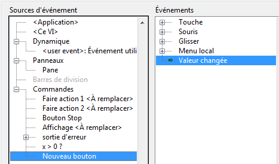
- Cliquez sur OK. LabVIEW crée une condition d'événement dans la structure Événement.
- Associez le terminal à l'événement en faisant glisser le terminal de la nouvelle commande sur le diagramme pour le mettre dans cette condition d'événement.
- Ajoutez du code à cette condition d'événement pour envoyer un message à une BGM.
Envoi d'un message à une boucle de gestion de messages
Les messages sont des chaînes qui indiquent à une BGM qu'elle doit exécuter un de ses diagrammes de messages. Les messages sont produits par la BGE et stockés dans la file d'attente de messages. Chaque itération de la BGM lit le plus ancien message de la file d'attente de messages et exécute le diagramme de message correspondant.
Effectuez les étapes suivantes pour envoyer un message à une BGM :
- Décidez quelle partie de l'application enverra le message et quelle BGM le recevra. Vous pouvez envoyer des messages de la BGE ou d'un diagramme de message.
- Décidez quel diagramme de message s'exécutera lorsque la BGM reçoit ce message. Assurez-vous que le diagramme de message existe et qu'il a le même nom que le message que vous voulez envoyer. Si le diagramme de message n'existe pas, créez-le.
- Dans le VI Main.vi, accédez au fil de liaison qui représente la file d'attente de messages de la BGM qui reçoit le message. Vous accédez à ce fil de liaison en le désassemblant à partir du cluster Files d'attente de messages en sortie renvoyé par le VI Create All Message Queues.vi. Le VI Main.vi contient déjà le code suivant, qui désassemble le refnum de file d'attente d'IU :
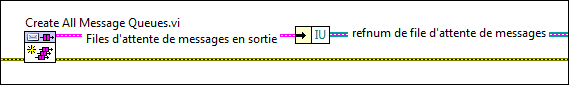
Développez cette fonction Désassembler par nom pour accéder aux fils de liaison des files d'attente de toutes les BGM.
- Dans la partie de l'application qui enverra le message, créez le code suivant :
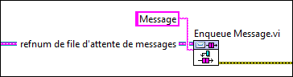
Dans le code ci-dessus, Message est le texte qui correspond au diagramme de message que vous avez identifié à l'étape 2, et le refnum de file d'attente de messages est le fil de liaison que vous avez identifié à l'étape 3. | Remarque Accédez au VI Enqueue Message.vi à partir de la fenêtre de l'Explorateur de projet du modèle ou en utilisant la fonctionnalité Placement rapide. |
- (Facultatif) Pour spécifier que ce message a priorité sur les autres qui se trouvent déjà dans la file d'attente, câblez VRAI à l'entrée Message prioritaire ? du VI Enqueue Message.vi :
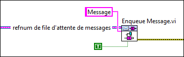
Les messages à haute priorité sont en général réservés aux arrêts d'urgence. Ces messages sont placés en tête dans la file d'attente de messages pour que la BGM qui les reçoit les consomme immédiatement après celui qu'elle est en train de consommer. Ce modèle n'autorise qu'un seul message à haute priorité. Par défaut, ce modèle utilise le message Exit comme message à haute priorité.
- (Facultatif) Pour envoyer des données avec le message, câblez une valeur à l'entrée Données de message du VI Enqueue Message.vi. Ce terminal peut accepter n'importe quel type de données. Par exemple, le code suivant envoie un nombre à virgule flottante double précision avec le message :
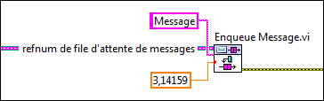
LabVIEW affiche un point de coercition sur le terminal d'entrée car le type de données de ce terminal est variant.
Changement du message qui arrête une boucle de gestion de messages
Les messages sont des chaînes ; vous pouvez donc créer ou changer un message sans modifier une définition de type. Cependant, ce modèle définit un message : le message Exit est défini dans Message Queue.lvlib:Dequeue Message.vi :
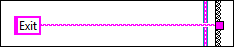Si vous voulez que vos BGM se ferment quand elles reçoivent un message autre qu'Exit, changez le message dans ce VI.
Gestion des messages non reconnus
Assurez-vous que toutes les structures Condition d'une BGM ont un diagramme de message Par défaut. Le code de ce diagramme de message s'exécute si la BGM lit un message qui n'a pas de diagramme de message correspondant. Il est important d'avoir un diagramme de message Par défaut car les messages sont des chaînes que vous entrez au moment de la programmation, et non pas les valeurs d'un énum.
Ignorer les erreurs dans la boucle de gestion d'événements et la boucle de gestion de messages
Effectuez les étapes suivantes pour spécifier une liste d'erreurs à ignorer pour la BGE et la BGM en utilisant leur sous-VI gestionnaire d'erreur respectif :
- Dans la fenêtre de l'Explorateur de projet, ouvrez le VI Error Handler - Event Handling Loop.vi ou Error Handler - Message Handling Loop.vi, en fonction d'où LabVIEW doit ignorer les erreurs, et affichez le diagramme.
- Trouvez la constante tableau étiquetée Ignore Errors (Static List):
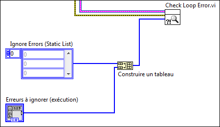
Pour ignorer les erreurs dans la BGE ou la BGM, ajoutez les codes de ces erreurs au tableau. Spécifiez un code d'erreur par élément du tableau. Les erreurs à ignorer dépendent de votre application. Par exemple, si vous lisiez la file d'attente sur un réseau, vous pourriez ignorer les erreurs de timeout.
Vous pouvez aussi spécifier des erreurs à ignorer dynamiquement à l'exécution en câblant la commande tableau à l'entrée Erreurs à ignorer (exécution) du sous-VI gestionnaire d'erreur. Spécifiez un code d'erreur par élément du tableau.
LabVIEW traite toutes les erreurs qui ne sont pas spécifiées comme erreurs à ignorer comme des erreurs normales. Si l'erreur normale a lieu dans la BGE, LabVIEW envoie les messages d'erreur à la file d'attente de messages. Vous pouvez définir comment la BGM consomme les messages d'erreur. Si l'erreur normale a lieu dans la BGM, LabVIEW envoie les messages d'erreur à la file d'attente de messages. Assurez-vous que le GMF s'arrête en exécutant le diagramme du message d'erreur. Les erreurs normales qui ont lieu dans la BGM risquent de mettre le GMF dans un état inconnu.
Permettre à une boucle de gestion de messages de modifier les commandes et les indicateurs par programmation
Pour permettre à une BGM de modifier une commande par programmation, créez un refnum pour la commande et assemblez-le dans la définition de type qui stocke les données de cette BGM. La procédure suivante utilise UI Data.ctl comme exemple.
- Créez le refnum de commande et déplacez-le pour le mettre dans le sous-diagramme Initialize de la BGM.
- Ouvrez la commande UI Data.ctl et ajoutez de l'espace au cluster pour y mettre le refnum.
- Dans le sous-diagramme Initialize, développez ce nouveau terminal sur la fonction Assembler par nom et câblez-y le refnum de commande :
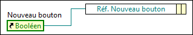
Le refnum de cette commande est alors disponible pour tout diagramme de message ayant accès à UI Data.ctl. Par exemple, le code suivant affiche un diagramme de message, Désactiver le bouton, qui utilise le refnum de commande pour désactiver et griser le bouton de la face-avant :
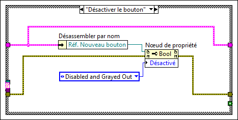 Informations associées
Reportez-vous à l'Aide LabVIEW, disponible en sélectionnant Aide»Aide LabVIEW dans LabVIEW, pour obtenir des informations complémentaires sur les concepts et les objets LabVIEW utilisés dans ce modèle. Vous pouvez aussi utiliser la fenêtre d'Aide contextuelle pour prendre connaissance d'informations de base concernant les objets LabVIEW lorsque vous placez le curseur sur chaque objet. Pour afficher la fenêtre d'Aide contextuelle dans LabVIEW, sélectionnez Aide»Afficher l'aide contextuelle.
Reportez-vous à l'exemple de projet Mesure continue et enregistrement dans un fichier, disponible à partir de la boîte de dialogue Créer un projet, pour voir un exemple d'adaptation de ce modèle à une application de mesure.
Reportez-vous à ni.com pour voir une présentation de ce modèle.
Informations juridiques
Copyright
© 2014– 2020 National Instruments. Tous droits réservés.
Conformément à la réglementation applicable en matière de droits d'auteur, cette publication ne peut pas être reproduite ni transmise sous une forme quelconque, que ce soit par voie électronique ou mécanique, notamment par photocopie, enregistrement ou stockage dans un système permettant la récupération d'informations, ni traduite, en tout ou partie, sans le consentement préalable et écrit de National Instruments Corporation.
NI respecte les droits de propriété intellectuelle appartenant à des tiers et nous demandons aux utilisateurs de nos produits de les respecter également. Les logiciels NI sont protégés par la réglementation applicable en matière de droits d'auteur et de propriété intellectuelle. Lorsque des logiciels NI peuvent être utilisés pour reproduire des logiciels ou autre matériel appartenant à des tiers, vous ne pouvez utiliser les logiciels NI à cette fin que si cette reproduction est permise par les termes du contrat de licence applicable auxdits logiciels ou matériel et par la réglementation en vigueur.
Contrats de licence utilisateur final et notices juridiques de tiers
Vous trouverez les contrats de licence utilisateur final (CLUF) et notices juridiques de tiers aux emplacements suivants une fois l'installation terminée :
- Les notices se trouvent dans les répertoires <National Instruments>\_Legal Information et <National Instruments>.
- Les CLUF se trouvent dans le répertoire <National Instruments>\Shared\MDF\Legal\license.
- Consultez le fichier <National Instruments>\_Legal Information.txt pour en savoir plus sur la manière d'inclure des informations juridiques dans des installeurs construits avec des produits NI.
Droits restreints pour les entités gouvernementales américaines
Si vous faites partie d'une agence, d'un service ou de toute autre entité gouvernementale des États-Unis, l'utilisation, la duplication, la reproduction, la publication, la modification, la divulgation ou le transfert des données techniques figurant dans ce manuel sont réglementés par les clauses de Droits restreints mentionnées dans la Réglementation des Acquisitions Fédérales 52.227-14 ("Federal Acquisition Regulation 52.227-14") pour les agences fédérales et aux sections 252.227-7014 et 252.227-7015 du supplément à la Réglementation des Acquisitions Fédérales liées à la défense ("Defense Federal Acquisition Regulation Supplement") pour les agences militaires.
Avis sur le copyright de IVI Foundation
Content from the IVI specifications reproduced with permission from the IVI Foundation.
The IVI Foundation and its member companies make no warranty of any kind with regard to this material, including, but not limited to, the implied warranties of merchantability and fitness for a particular purpose. The IVI Foundation and its member companies shall not be liable for errors contained herein or for incidental or consequential damages in connection with the furnishing, performance, or use of this material.
Marques
Reportez-vous à la page NI Trademarks and Logo Guidelines, sur ni.com/trademarks, pour obtenir des informations sur les marques NI. Les autres noms de produits et de sociétés mentionnés aux présentes sont les marques ou les noms de leurs propriétaires respectifs.
Brevets
Pour la liste des brevets protégeant les produits/technologies NI, veuillez vous référer, selon le cas : à la rubrique Aide»Brevets de votre logiciel, au fichier patents.txt sur votre média, ou à National Instruments Patent Notice sur ni.com/patents.